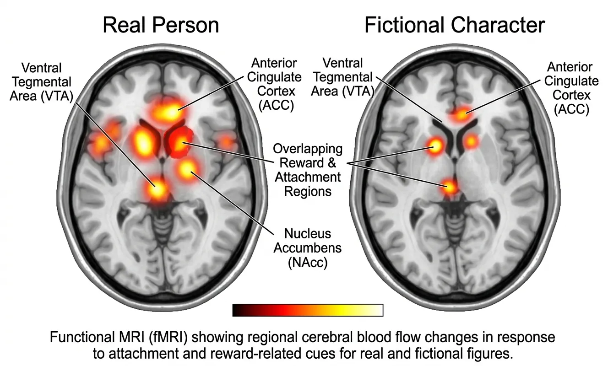
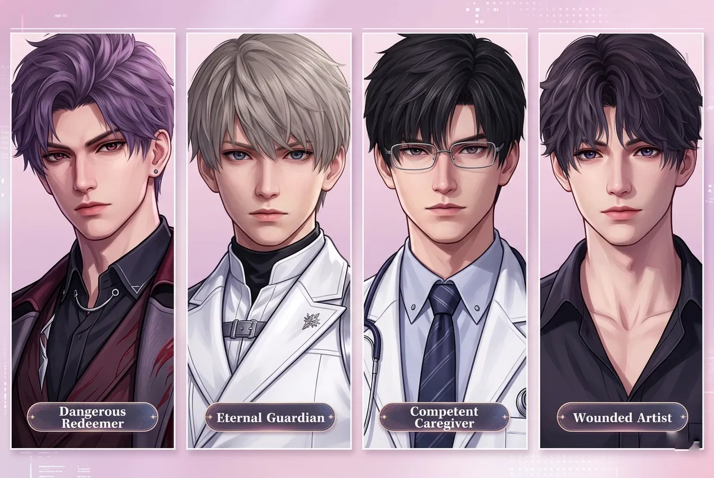
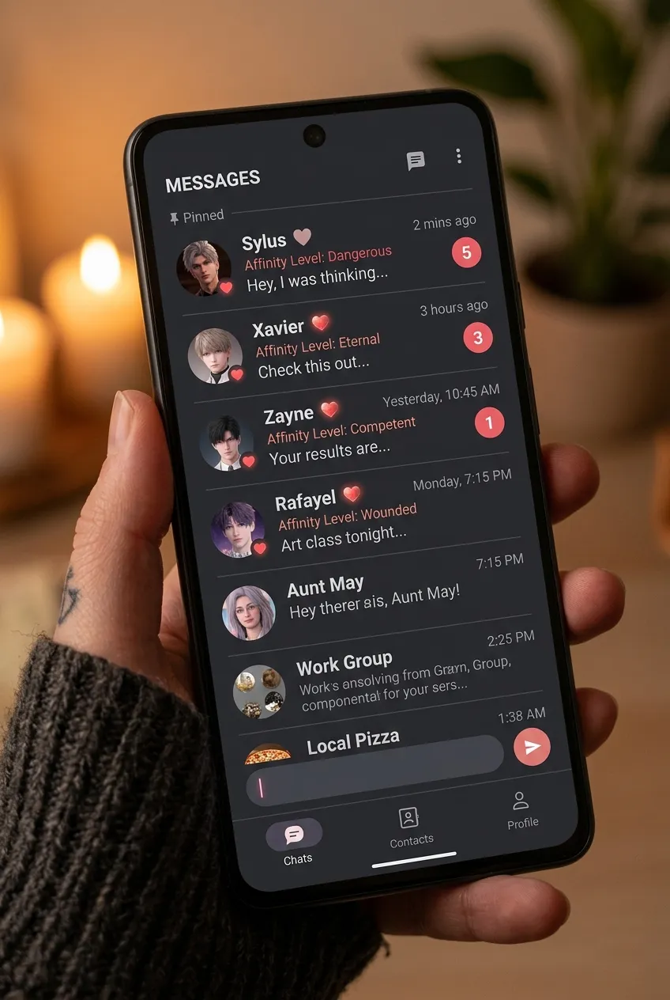
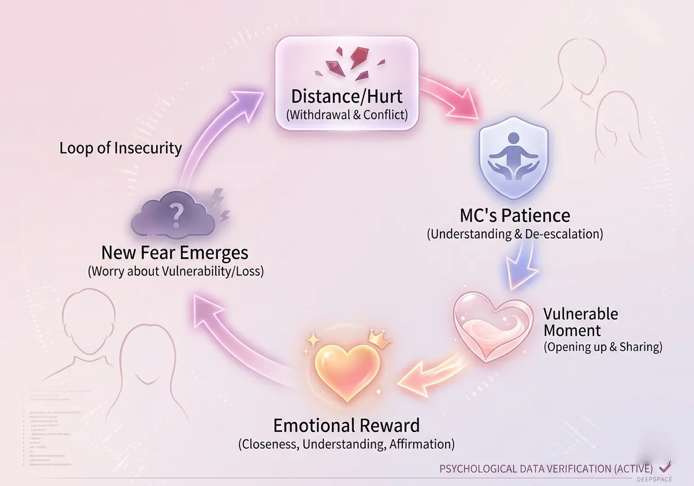
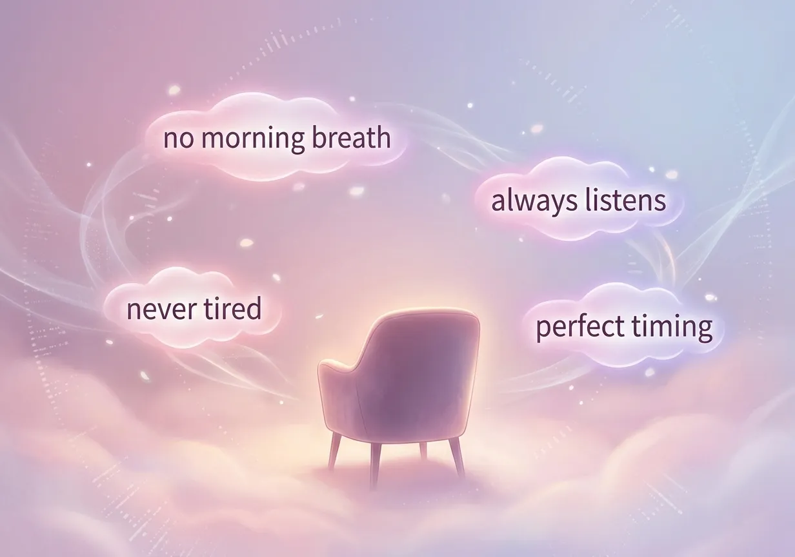
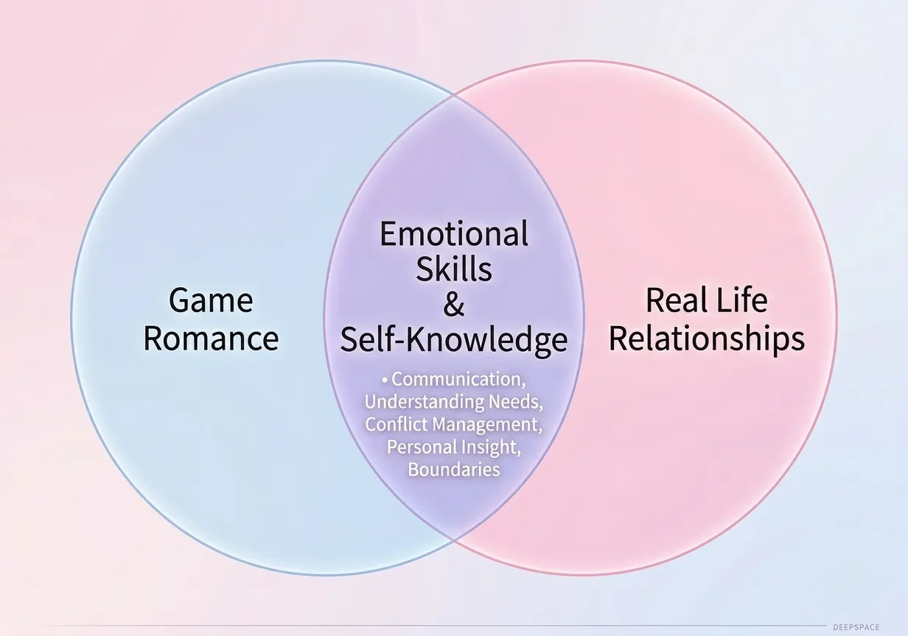

Why do millions of players fall in love with pixels? A psychological exploration of parasocial bonds, attachment styles, and emotional projection in Love and Deepspace.
In 2026, millions of adults around the world report experiencing genuine romantic attachment to fictional characters. The phenomenon is not new — from Sherlock Holmes fans in the 1890s to anime waifu culture in the 2000s — but games like Love and Deepspace have refined the formula to an almost clinical precision. Players cry over SMS messages, feel jealousy when a character talks to someone else, and experience real heartbreak when a story branch ends tragically.
This is the "Pixel Paradox": we know the characters are not real. We know their words are written by writers, their faces are 3D models, and their "love" is code. Yet the feelings they evoke are indistinguishable from those sparked by physical humans. Why? Because emotions are not rational responses to external reality — they are biochemical reactions to perceived meaning. And the game is exceptionally good at manufacturing meaning.

Figure 1: Brain imaging study — overlapping activation patterns when subjects think of real partners vs. favorite fictional characters.
Image description: Two fMRI brain scans side by side, both showing bright spots in reward and attachment regions, labeled "Real Person" and "Fictional Character" with high overlap.
Love and Deepspace's four male leads are not randomly designed. They map neatly onto four foundational psychological archetypes that trigger distinct attachment responses. Understanding why you prefer one over another reveals deep patterns in your own emotional needs.
| Character | Archetype | Psychological Hook | Attachment Style Appeal |
|---|---|---|---|
| Sylus | The Dangerous Redeemer | "Only I can heal him" / Forbidden desire | Anxious-preoccupied (thrill of uncertainty) |
| Xavier | The Eternal Guardian | Unconditional loyalty across time | Secure + Fearful-avoidant (safety with distance) |
| Zayne | The Competent Caregiver | Emotional control + hidden vulnerability | Dismissive-avoidant (longing for the unattainable) |
| Rafayel | The Wounded Artist | Creative sensitivity + fear of abandonment | Anxious attachment (need for reassurance) |
Sylus — The Dangerous Redeemer. His backstory (N109 zone violence, cybernetic transformation, implied bloodshed) creates moral distance, but his tenderness toward MC bridges it. The psychological hook: "If I can earn his love, I must be special." This taps into the human need for uniqueness and the thrill of taming something wild.
Xavier — The Eternal Guardian. Two hundred years of waiting. He has seen civilizations fall but never wavered. The hook: unconditional loyalty — something increasingly rare in real relationships. For players with abandonment fears, Xavier represents safety without demand.
Zayne — The Competent Caregiver. A top surgeon, emotionally reserved, yet his love language is acts of service (cold medicine, medical care, silent protection). The hook: "He will take care of me, but I have to earn his openness." This appeals to those who value competence and find vulnerability more precious when rare.
Rafayel — The Wounded Artist. Emotional, dramatic, terrified of being forgotten. The hook: reciprocal vulnerability — he needs you as much as you need him. For players with high empathy, Rafayel's open wounds feel like an invitation to nurture and be nurtured simultaneously.

Figure 2: The four romantic archetypes of Love and Deepspace mapped onto attachment theory.
Image description: Four character portraits (Sylus, Xavier, Zayne, Rafayel) each with a badge: "Dangerous Redeemer", "Eternal Guardian", "Competent Caregiver", "Wounded Artist".
One of the most psychologically potent mechanics in Love and Deepspace is the asynchronous communication system — SMS messages and phone calls that arrive at unpredictable times, triggered by story progress, affinity levels, or real-time clocks.
The most addictive reward schedule is not predictable (e.g., every 10 messages) but variable-ratio — you never know when the next "hit" will come. This is the same mechanism that makes slot machines addictive. The SMS system exploits this: a new message could arrive in 5 minutes or 5 hours. Each time you check your phone, you get a small dopamine spike — and the uncertainty makes the reward more powerful when it finally comes.
But the game goes further. The messages are not generic — they reference previous conversations, remember details about MC's choices, and occasionally include moments of vulnerability that feel "earned." This creates a simulated intimacy that bypasses the player's rational defenses. Your brain processes the interaction as a relationship, not a transaction.
The "Goodnight Message" Effect: Players report that receiving a "goodnight" text from their chosen character feels genuinely soothing. This is not coincidental. The game's writers study the rhythms of real romantic communication — the morning greeting, the check-in during work hours, the late-night confession — and replicate them with precision. The result is a parasocial bond that mimics the neural patterns of long-distance romance.

Figure 3: The SMS system — unpredictable timing and personalized content drive dopamine loops.
Image description: Smartphone-style UI showing message threads with timestamps, red notification badges, and a heart icon indicating affinity level.
One of the most powerful emotional hooks in Love and Deepspace is the redemption arc — particularly for Sylus, but also present in Xavier's loneliness, Zayne's emotional repression, and Rafayel's fear of abandonment. The player is positioned not just as a love interest but as a catalyst for healing.
A phenomenon where caregivers develop romantic or sexual feelings for those they care for. In games, this is inverted: the player is positioned as the only one who can heal the wounded character. This creates a sense of purpose and uniqueness — "only I can save him" — which is deeply rewarding and can create intense emotional bonds.
Sylus's storyline is the clearest example. A man who has killed, who has been transformed into a weapon, who has lost his humanity — and yet, with MC, he shows tenderness. The player's emotional labor (forgiving his violence, seeing past his mask, trusting him despite evidence) feels heroic. And when he finally opens up, the reward is immense.
But the game is careful: the redemption is never complete. Sylus still has darkness. Xavier still carries centuries of grief. Zayne still builds walls. Rafayel still fears abandonment. This permanent incompleteness is crucial — it ensures the player never feels "done" with the relationship. There is always more healing to do, more vulnerability to uncover.

Figure 4: The redemption loop — distance → vulnerability → acceptance → deeper intimacy → new conflict.
Image description: Cycle diagram: Hurt/Withdrawal → MC's patience → Vulnerable moment → Emotional reward → New fear emerges → Repeat.
Paradoxically, one of the reasons players fall so hard for fictional characters is what the game does not provide: the mundane, the flawed, the disappointing.
Real relationships involve compromise, boredom, conflict over chores, bad breath in the morning, and moments of genuine irritation. Fictional characters have none of these. They exist in a state of eternal optimal responsiveness — always saying the right thing (eventually), always growing toward you, never having a bad day that isn't narratively meaningful.
This absence of negativity creates a "comparison trap" where real partners inevitably fall short. But the trap is also a comfort: the game offers an escape from the labor of real relationships while still providing the emotional rewards. The "empty chair" — the space where a real person's flaws would be — is instead filled with the player's own idealizations.
The "Silent Monologue" Phenomenon: Many players report having imaginary conversations with their favorite character during daily activities — imagining what Sylus would say about a difficult coworker, or how Xavier would react to a beautiful sunset. This internal monologue transforms the character from a game asset into a customized mental companion, further blurring the line between fiction and felt reality.

Figure 5: The "empty chair" — idealized space where flaws would be, filled instead by player projection.
Image description: A chair facing away, surrounded by soft light, with text labels floating around it: "no morning breath", "always listens", "never tired", "perfect timing".
The common criticism of games like Love and Deepspace is that they are "escapist" or "prevent real connection." But emerging research suggests a more nuanced picture: for many players, digital romance complements rather than replaces real relationships.
| Player Profile | Real Relationship Status | Reported Effect of Game |
|---|---|---|
| Single, actively dating | Seeking partner | Reduces dating anxiety, clarifies emotional needs |
| In long-term relationship | Partnered 2+ years | Increases appreciation for partner's real-world virtues |
| Married, older players | Married 5+ years | Provides fantasy outlet without threatening marriage |
| Trauma survivors | Avoiding intimacy IRL} | Safe space to practice emotional vulnerability |
Players report using the game to explore their own emotional needs — noticing which character's wounds they most want to heal, which communication styles feel safest, which fears the story activates. This self-knowledge often transfers to real relationships, making players more articulate about what they want and need from partners.
The "Warm Glow" Effect: Many players report feeling genuinely happier and less lonely after playing, and that this positive mood carries into their real-world interactions. The game does not isolate them; it regulates their emotional state, making them more available for genuine connection.

Figure 6: The complementary model — digital romance as emotional regulation tool, not replacement.
Image description: Two overlapping circles labeled "Game Romance" and "Real Life Relationships", overlapping area labeled "Emotional Skills & Self-Knowledge".